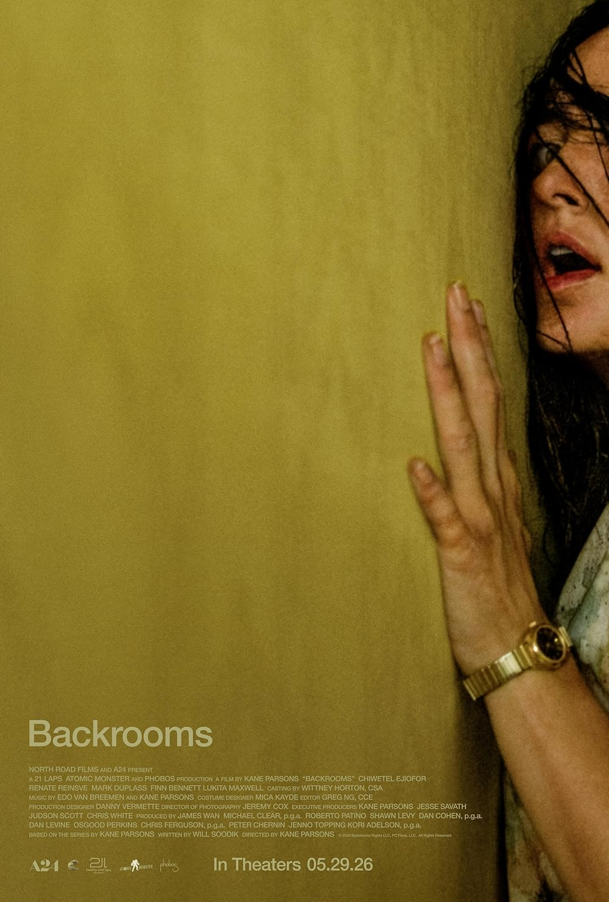

A24 · German Market Social Media Campaign

Production & High-End Editing
Lausebengel is a production and high-end editing studio built by and for a new generation of filmmakers. Rooted in a distinctly Gen Z sensibility, we champion original voices and ambitious stories built to travel.
